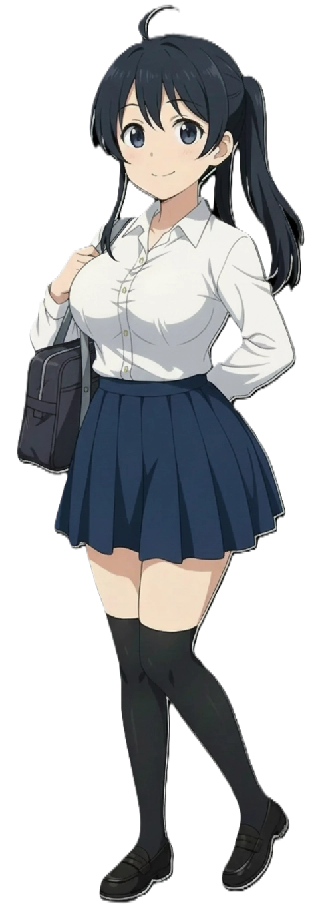
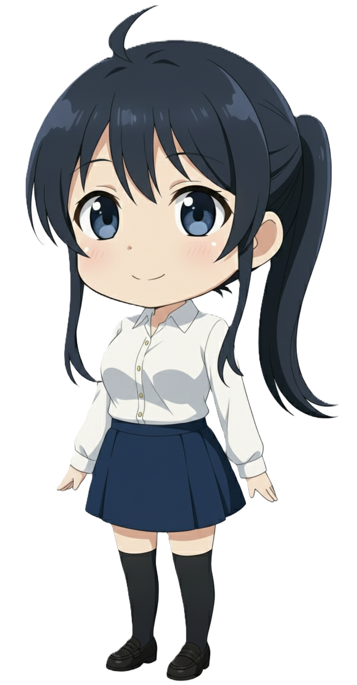

임세하 7호선
Im Seha | 林洗河 | Hayashi Araka
| 임세하 Im Seha |
|
|---|---|
|
 기본 SD효빈교통공사 7호선 공식 마스코트 (동생)
|
|
| 이름 | 임세하 (Im Seha) 日本名: Hayashi Araka (林洗河) |
| 나이 | 20세 (2005년생) |
| 생일 | 3월 5일 [1] |
| 신분 | 효빈대학교 공과대학 기계공학과 1학년 (재학) |
| 신장 | 153.4cm |
| 출신지 | 효빈광역시 중구 중보로 |
| 학력 |
효빈초등학교 (졸업) 중수여자중학교 (졸업) 중수여자고등학교 (졸업) 효빈대학교 (기계공학 / 재학) |
| 가족 관계 | 부모님, 큰언니(임세정), 오빠(임세현), 작은언니(임선아), 여동생(임세연, 임세빈) |
| MBTI | INTP (논리적인 사색가) |
| 별명 | 공대너드, 기계 깎는 노인, 세하봇, 사유리 버그 [2], 구원자 |
| 성우 |
日: 다테 사유리 [3] 韓: 방연지 |
"이 구동음... 회주공업 시절 전설의 엔지니어들이 손수 깎아 만든 IGBT 소자 초기형이 분명해. 회생제동 시 들리는 이 특유의 고주파는 단순한 베어링 마모랑은 파장이 다르거든. 쵸퍼 제어 시절의 잔재가 아직 남아있는 건가? (중얼중얼)
...어? 지금 저한테 말 거신 건가요? 죄송해요, 귀에 노이즈 캔슬링 켜놓고 펌웨어 디버깅 하느라 못 들었어요."
1. 개요
기계 앞에서는 유창한 전문 용어를 쏟아내지만, 사람 앞에서는 고장 난 로봇처럼 어색하게 행동하는 전형적인 기계공학도의 표본입니다.
효빈권 광역전철 7호선(친환경 무가선 트램)을 상징하는 마스코트 중 동생 역할을 맡고 있습니다. 2010년, 7호선이 낭만과 기술력이 넘치던 '회주공업' 사철 체제에서 효빈교통공사 소속으로 전격 공영화되는 역사적인 리뉴얼 시기에, 베테랑 맏언니인 임세정과 함께 새로운 세대를 상징하며 화려하게 데뷔했습니다. 직업은 대학생이며, 효빈시 최고의 아웃풋이자 공학도들의 성지인 효빈대학교 기계공학과 1학년에 재학 중입니다.
7호선의 상징색인 화사한 분홍색(#FF8899)을 배정받았지만, 화려하고 사교적인 언니 세정이나 타 호선의 발랄한 마스코트들과는 전혀 다른 매력을 지녔습니다. 겉보기엔 수수한 여대생 같지만, 기계, 모터, 납땜, 배터리 효율 이야기만 나오면 눈빛이 반짝이는 중증 공대 너드(Nerd)이자 엄청난 지식을 자랑하는 철도 동호인입니다. 필리핀 출신의 어머니를 둔 다문화 가정 출신임에도 불구하고, 입만 열면 밤샘 코딩에 지친 완벽한 K-공대생의 분위기를 풍겨 팬들에게 압도적인 현실감과 친근함을 선사합니다.
2. 상세 설정
2.1. 성격 및 특징 (뼛속까지 공대 너드)
전형적인 INTP(논리적인 사색가) 성향의 극단적 예시입니다. 평소에는 구석에 조용히 앉아 자기만의 회로도 세계에 깊이 빠져 있습니다. 주변에서 소란이 벌어져도 "나와는 무관한 시스템 외적 변수"라며 쿨하게 무시하지만, 누군가 전동차 모터 구동 방식이나 신형 배터리 충전 효율, 혹은 코딩 언어에 대해 질문을 던지면 눈에 무서운 안광이 돌며 대학원생 뺨치는 전문 지식을 속사포로 쏟아냅니다. 질문한 사람이 그만해달라고 부탁할 때까지 멈추지 않는 열정을 보입니다.
"그건 논리적 오류인데.", "설계 단계부터 잘못되었어."라며 결론부터 직설적으로 짚어내는 솔직한 화법을 구사합니다. 일상 대화 중에도 "내 인내심의 베어링이 마모되고 있어", "머릿속 회로가 쇼트 났으니 당분간 오프라인 모드로 전환하겠어" 같은 전문적인 공대식 은어를 숨 쉬듯이 내뱉어 주변 사람들을 놀라게 만듭니다.
또한, 단순히 물건을 수집하는 것을 넘어 기계를 직접 뜯고 기름때를 묻혀야 직성이 풀리는 극강의 '실전형 철덕'입니다. 그녀의 무거운 백팩 안에는 화장품 파우치 대신 맥가이버 공구 세트, 휴대용 인두기, 테스터기, 윤활유(WD-40), 그리고 규격별 케이블 타이가 가득합니다. 길을 걷다가 자판기나 환풍기에서 미세한 이상 소음만 들려도 즉시 보행을 멈추고 스패너를 꺼내며 분석에 들어갑니다. 특히 기계를 막 다루는 8호선 막내 유리아가 정체불명의 비상 버튼을 만지려 하면, 평소의 느긋한 모습은 온데간데없이 빛의 속도로 달려들어 "안 돼! 그거 누르면 전체 시스템 쇼트 나서 수리비 3천만 원 깨진다고!!"라며 절규하곤 합니다.
2.2. 학력 및 능력
이공계 분야에 한해서는 효빈시가 낳은 천재 중의 천재입니다. 명문 중수여고 재학 시절, 미적분과 물리 과목은 단 한 번도 전교 1등을 놓친 적이 없는 압도적 기량을 자랑했습니다. 남들은 쳐다보기도 힘들어하는 모터 감속기 회로도나 복잡한 제동 장치 3D 도면을 마치 퍼즐 게임 하듯 분석하며 즐거움을 느낍니다.
| 과목 | 등급 (내신) | 비고 |
|---|---|---|
| 수학(미적분) | 1등급 고정 | "숫자는 거짓말을 하지 않지."라며 수식 풀이를 명상하듯 즐깁니다. |
| 물리학 | 1등급 압살 | 역학과 전자기학 파트는 문제를 눈으로 훑고 답을 바로 도출해 내어 물리 선생님을 경악하게 만들었다는 일화가 있습니다. |
| 국어(문학) | 5등급 | 임세하 인생 최대의 아킬레스건입니다. '화자가 창밖의 푸른 커튼을 보고 느낀 감정을 고르시오.'라는 문제에 '단열재가 들어간 두꺼운 암막 커튼이라 실내 난방 효율이 20% 상승하여 논리적으로 기뻤을 것이다.'라고 답을 적어 국어 선생님을 깊은 탄식에 빠뜨린 재미있는 일화가 있습니다. |
철도 덕력은 단연코 S랭크입니다. 다만 풍경이나 여행의 낭만을 논하는 3호선 박라미와는 성향이 완전히 다릅니다. 세하는 오직 "어떤 소자의 모터를 썼고, 대차의 구조는 어떠하며, 가속력 수치가 얼마인가" 같은 순수 메카닉과 차량 성능에만 열광합니다. 특히 과거 회주공업 시절 선배 엔지니어들이 손수 작성해 물려준 '수제 모터 정비 매뉴얼'을 전공 서적보다 더 소중히 여기며 늘 지니고 다닙니다.
2.3. 정치 성향
- 對 윤대환 (전 시장): 확고한 불호. 이념적인 문제가 아니라 오직 '과학 기술에 대한 존중'의 부재 때문입니다. 윤대환 전 시장 재임 시절, 당시 막강한 기술력을 자랑하던 회주공업의 7호선 트램을 고철 덩어리로 취급하며 노선을 완전히 폐지하려 했던 점을 깊이 기억하고 있습니다. 세하에게 트램 시스템은 수많은 공학자의 땀방울이 서린 '공학적 아름다움의 결정체'이자 친환경 교통의 미래이기 때문에, 윤대환 전 시장을 '기술의 가치를 모르는 행정가'로 여기며 강한 반감을 가지고 있습니다.
- 對 박효빈 (현 시장): 무한한 찬양과 존경. 현 박효빈 시장(1996년생)이 과감하게 대규모 예산을 투입해 '최신형 무가선 저상 트램'으로 7호선을 완벽하게 부활시킨 점을 깊이 찬양합니다. 공학도인 세하 역시 과거 사기업 특유의 자본 논리와 외압 앞에서 기술력이 흔들리는 것을 보며 뼈저린 무력감을 느꼈었습니다. 그런데 박 시장이 7호선을 공영화하여 완벽한 시스템적 안정성을 부여하고 기술 개발에 날개를 달아주었기에, 세하에게 박 시장은 "진정한 공학의 진가와 시스템의 안정성을 아는 구원자"로 통합니다.
2.4. 외형 및 디자인 (작업 편의성 100% 실용주의)
7호선의 상징색은 분홍색(#FF8899)이지만, 세하의 공식 일러스트에서는 화려한 분홍색 장식을 찾아볼 수 없습니다. 짙은 흑남색의 부스스한 머리카락을 활동하기 편하게 대충 묶은 사이드 포니테일 스타일을 고수하며, 정수리에는 자기주장이 뚜렷한 바보털(아호게)이 하나 솟아 있습니다. 팬들은 이 바보털이 캠퍼스 내 무료 와이파이나 블루투스 신호를 잡아내는 안테나라고 굳게 믿고 있으며, 머리를 많이 쓰면 빙글빙글 돌아간다는 귀여운 도시전설이 있습니다.
복장 역시 패션보다는 '실용주의'를 극대화한 모습입니다. 장식이 없는 빳빳한 하얀색 와이셔츠에 오염이 덜 눈에 띄는 짙은 남색 플리츠스커트를 착용했습니다. 목 단추를 편안하게 풀어헤치고 셔츠 소매를 팔뚝까지 거칠게 걷어붙인 모습은, 언제든 기계를 다루고 납땜을 할 준비가 되어 있는 기계공학도의 완벽한 '전투 태세'를 시각적으로 잘 보여줍니다.
다리에는 검은색 오버니삭스를 신어 매력적인 스타일을 완성했지만, 정작 패션을 칭찬하면 본인은 미간을 찌푸리며 "정전기 방지 패드를 피부에 직접 붙이기 편하도록 고안된 과학적인 작업 복장이다."라는 엉뚱한 대답을 내놓습니다. 코딩이나 정밀 설계 등 고도의 집중이 필요할 때는, 느슨했던 머리를 꽉 조여 묶고 걷어붙인 소매를 한 번 더 접어 올리는 것이 그녀만의 루틴입니다.
✨ 일러스트 포즈의 진실 (해맑은 미소의 이유)
공식 일러스트 속 세하는 한 팔을 번쩍 위로 치켜들고 환하게 웃고 있습니다. 언뜻 보면 캠퍼스에서 동기를 반갑게 부르는 밝은 여대생 같지만, 팬들은 이 사진의 재미있는 진실을 알고 있습니다. 저 표정은 사람을 보고 짓는 표정이 아닙니다. 박효빈 시장님이 7호선 신형 트램에 차세대 전고체 고용량 배터리팩을 탑재하겠다고 브리핑에서 발표한 순간, 엄청난 도파민을 주체하지 못하고 환호성을 지르는 찰나를 포착한 것입니다. 이후 브리핑이 끝나기도 전에 노트북을 켜서 해당 배터리 제조사의 스펙 시트를 분석하기 시작했다고 전해집니다.
2.5. 목소리 및 성우 연기 (AI 보이스와 광기의 스위치)
평소의 '감정이 배제된 AI 톤'과, 버튼이 눌렸을 때 폭주하는 '공대생의 텐션' 사이의 극명한 갭 차이를 한일 양국 성우 모두 완벽하게 연기해 내어 큰 호평을 받고 있습니다.
한국어판은 보다 현실적이고 처절한 '밤샘 코딩에 지친 K-공대생'의 톤을 소름 돋게 구현했습니다. 입에 간식을 물고 웅얼거리듯 "아... 컴파일 에러 또 났네..."라고 읊조리는 하이퍼 리얼리즘 연기가 일품입니다. 특히 오빠 세현이 애니메이션 버퍼링에 분노하여 공유기 전원을 뽑아버렸을 때 튀어나오는 "아 내 데이터아아악!!!" 하는 영혼 밑바닥부터 끌어올린 사자후는, 수많은 이공계열 학생들의 깊은 공감을 사며 화제가 되었습니다.
평소에는 안드로이드처럼 감정과 억양이 절제된 낮은 톤으로 건조하게 말합니다. 하지만 새로운 스펙의 기계를 발견하거나, 밤새워 짠 코드가 에러 없이 돌아갔을 때 발생하는 이른바 '사유리 버그(Sayuri Bug)'가 발동하면, 성우 본인 특유의 통제 불가능한 하이 텐션이 튀어나와 "이거 완전 쩔어!! 회로도 미쳤따아아아!!!"라며 환호합니다. 평소의 무뚝뚝함과 이 폭발적인 귀여움의 갭 모에 덕분에 일본 철도 팬덤에서 독보적인 지지율을 자랑합니다.
3. 가족 관계 (임씨 가문 6남매)
"내 방 반경 3미터 이내로 접근 시, 케이블 타이로 묶어버리겠어." - 세하 방문 앞에 붙어있는 살벌한 경고문
효빈광역시의 다문화 특구를 관통하는 7호선의 상징성을 반영하여, 필리핀 다문화 가정의 6남매라는 매우 입체적이고 왁자지껄한 가족 서사를 지니고 있습니다. 나이 차이가 나는 부모님과 개성 넘치는 6남매가 모여 집안에 조용할 날이 없습니다.
아버지 (임진욱, 59세): 산업 현장을 누비는 베테랑 용접공. 세하의 기계 사랑은 아버지로부터 고스란히 물려받은 것입니다. 딸에게 인형 대신 폐부품을 가져다준 조기 교육의 선구자입니다.
어머니 (마리아 / 김영자, 52세): 필리핀 출신으로 효빈시에 정착한 공장 노동자이자 집안의 절대 권력자입니다. 매의 눈으로 세하의 방에 숨겨진 공구들을 찾아내 압수하며, 집안을 개조하려는 세하에게 잔소리를 쏟아냅니다.
첫째 큰언니 (임세정): 7호선 역무원이자 실질적인 군기반장. 세하가 제어판을 뜯으려 할 때 "임.세.하. 손 떼라." 세 글자로 제압하는 영원한 통제관입니다.
둘째 오빠 (임세현): 사회복지경영학과 재학 중인 애니메이션 덕후 문과생. 하지만 통계와 데이터 분석에 천재적인 재능을 가져, 이를 게임 확률 계산에 낭비하며 세하의 혈압을 올립니다.
셋째 언니 (임선아): 문과 오빠와 이과 동생 사이에서 묵묵히 완충 역할을 하는 평화주의자입니다.
다섯째 여동생 (임세연): 기계에 미친 언니와 마라탕후루를 좋아하는 막내 사이에서 고통받는 지극히 평범한 여고생입니다. 세하가 마개조한 고데기를 보고 비명을 지르곤 합니다.
여섯째 막내 (임세빈): 이국적인 외모를 지녔지만 입만 열면 완벽한 'K-여중생어'를 구사합니다. 세하를 "기계 깎는 노인네"라 부르며 도발하는 대범한 성격을 지녔습니다.
어머니의 문화적 배경이 섞여 '아테(Ate, 언니)'와 '꾸야(Kuya, 오빠)'라는 호칭을 엄격하게 사용합니다. 세하가 위기 상황일 땐 다급하게 "아테 세정!! 살려줘!!"를 외칩니다. 하지만 정작 첫째 세정이나 둘째 세현은 동생들을 부를 때 자비 없이 "야 임세하", "어이 공대생"으로 부르는 'K-장남/장녀'의 권력을 보여주어 큰 웃음을 줍니다.
4. 인간 관계
학창 시절, 폐부 위기에 처했던 철도부에서 동고동락했던 끈끈한 인연들입니다. 부원이 세하와 라세나 단 두 명뿐이라 강제 폐부될 뻔했으나, 마침 전학 온 전노아를 매점 빵으로 끈질기게 설득해 기적적으로 구출해 냈습니다. 이 인연은 훗날 효빈교통공사에서도 환상의 콤비로 이어지게 됩니다. 세하가 기계 헛소리를 하면 노아가 팩트로 반박하는 훌륭한 밸런스를 자랑합니다.
같은 효빈대학교 동문이자 05년생 트리오의 멤버입니다. 세하가 감을 잡지 못하는 복잡한 사회 문제를 미소하가 무자비한 통계 데이터로 깔끔하게 정리해 주어, 내심 그녀의 능력을 크게 존경하고 있습니다.
효빈기계공고에 재학 중인 호기심 많은 막내입니다. 기계를 뜯어보려는 유리아의 행동에 수명이 줄어드는 기분을 느낍니다. 유리아가 정체불명의 스위치에 손을 뻗으면 빛의 속도로 태클을 걸며 제지하는 대형 사고 방지 1차 방어선 역할을 톡톡히 하고 있습니다.
세하가 진심으로 존경하고 따르는 '참된 기계 덕후' 대선배입니다. 세하가 "선배님... 모터 배선도 뜯어보다가 전공 F학점 받았습니다..."라며 울상 지었을 때, 고나미가 진지하게 위로해 주자 감동하여 '고나미 바라기'가 되었다는 훈훈한 일화가 있습니다.
5. 러닝 개그 및 특수 설정
🤖 사유리 버그 (캐릭터 붕괴)
평소에는 다크서클이 내려온 무뚝뚝한 표정으로 전문 지식만 줄줄 읊어대지만, 가끔 예기치 못하게 담당 성우(다테 사유리) 특유의 하이텐션과 귀여운 본성이 튀어나올 때가 있습니다.
기뻐서 방방 뛰거나 삑사리 섞인 환호성을 지르는 등 평소의 시니컬함과는 180도 다른 모습을 보여주는데, 팬들은 이 기이한 현상을 '사유리 버그(Sayuri Bug)'라고 부르며 이 귀여운 반전 매력을 무척 좋아합니다.
🤓 마법의 각성 아이템: 공대생 뿔테 안경
안경을 쓰면 '코딩 실력과 기계 설계 능력이 200% 상승한다'는 본인만의 루틴을 강하게 믿고 있습니다. 평소에는 미모 유지를 위해 렌즈를 끼고 다니지만, 전과 과제 마감 전날이나 벼락치기 기간이 되면 머리를 대충 묶고 알이 두꺼운 시커먼 뿔테 안경을 장착한 채 엄청난 집중력을 발휘합니다.
📦 유쾌한 가족 일화들
발릭바얀 박스 테트리스 사태: 필리핀 친척들에게 보낼 대형 상자를 포장하던 날, 빈 공간에 폐전동차의 15kg짜리 쇳덩어리를 몰래 넣었다가 큰언니에게 혼나 우체국까지 무거운 쇳덩어리를 메고 걸어갔다는 짠한 사연이 있습니다.
룸피아 기계 폭주 사건: 필리핀식 만두 룸피아를 손으로 빚기 귀찮아 '자동 롤링 머신'을 개발했으나, 계산 오류로 만두가 빠른 속도로 발사되어 막내의 얼굴을 강타하는 바람에 결국 밤새워 수작업을 해야 했던 발명가적 흑역사가 존재합니다.
6. 여담
- [밈] 분홍색 밴드 인싸와의 극악무도한 평행이론: 7호선의 상징색이 분홍색(#FF8899)이다 보니, 서브컬처 팬덤에서는 애니메이션 뱅드림!의 캐릭터 '치하야 아논'과 자주 엮이게 되었습니다. 상징 컬러는 완벽하게 일치하지만 성향은 우주 끝과 끝으로 완전히 반대입니다. 외향적이고 화려한 아논과 내향적이고 수수한 공대생 세하가 서로의 옷을 바꿔 입고 당황하는 팬아트와 패러디가 큰 인기를 끌고 있습니다.
- "에? 혼혈이었어?!" (하이퍼 리얼리즘): 임씨 가문이 필리핀 다문화 가정이라는 설정이 공개되었을 때 팬덤은 큰 충격에 빠졌습니다. 외모나 언행에서 외국인 클리셰가 전혀 느껴지지 않는 완벽한 한국의 이공계 대학생 그 자체였기 때문입니다. 이는 한국에서 나고 자란 다문화 2세들의 현실을 섬세하게 고증한 결과로, 훌륭한 디테일이라는 평가를 받습니다.
- 영어 과목 학점 테러: 다문화 가정임에도 불구하고 일하느라 바쁘셨던 부모님 사정상 이중언어 교육을 받지 못해, 언어 능력은 완벽하게 한국식에 맞춰져 있습니다. 전공인 미적분과 코딩은 만점을 받으면서 교양 영어 과목에서는 낮은 성적을 받아 학점 관리에 어려움을 겪고 있습니다. 영어를 왜 못하냐는 질문에 "파이썬이 세계 공용어이니 영어가 왜 필요하냐"며 당당하게 궤변을 늘어놓아 웃음을 줍니다.
- 소울 간식과 바나나 혐오증: 바나나 케첩을 활용한 필리핀식 스파게티가 가족의 소울 푸드입니다. 또한 어릴 적 박스째로 먹고 자란 바나나에 심각하게 질려, 지금은 누가 까서 줘도 절대 먹지 않는 확고한 철학을 지니고 있습니다.
- [비주얼] 정비복 속에 봉인된 건강미: 평소 헐렁한 정비복 속에 파묻혀 살던 공대 너드 임세하의 진정한 피지컬이 휴가 사진을 통해 공개되며 큰 화제가 되었습니다. B87 - W57.5 - H88이라는 볼륨감 넘치는 몸매는 팬들에게 신선한 충격을 주었으며, "효빈시 베이글 끝판왕"이라는 칭호를 얻게 되었습니다. 수영복 선택에 있어서도 앳된 얼굴과 대비되는 육감적인 라인을 자랑하며 언니인 임세정 대리와 함께 피지컬 양대 산맥을 굳건히 지키고 있습니다.
- 2026 HAF 포스터 모델 역전극: '기름때 묻은 공대생' 이미지로 중위권에 머물던 세하가, 건강하고 매력적인 체형이 돋보이는 수영복 일러스트 공개 직후 엄청난 지지율을 얻으며 당당히 2026년 축제 모델 1위로 선정되는 놀라운 역전극을 펼친 바 있습니다.
- 돌림자 파괴자 셋째 언니: 6남매 중 '세(洗)' 자 돌림을 칼같이 지키는 다른 형제들과 달리 셋째 언니만 '선아'라는 이름을 가졌습니다. 팬들 사이에서 수많은 음모론이 돌았으나, 고모가 예쁜 이름으로 지어주겠다며 다짜고짜 작명해버렸다는 엉뚱하고도 허무한 진실이 밝혀져 유쾌함을 더했습니다.
각주
- 7호선이 '회주공업' 사철 체제에서 효빈교통공사 소속으로 공영화되어 안정성을 확보한 역사적인 시점(2010년 3월 5일)과 생일이 완벽하게 같습니다.
- 담당 성우의 타고난 허당끼와 미칠 듯한 귀여운 텐션이, 무뚝뚝한 공대생 캐릭터인 임세하를 뚫고 튀어나오는 유쾌한 현상을 일컫는 말입니다.
- 뛰어난 가창력을 지닌 성우의 특성 덕분에 가끔 샤워실에서 기분이 좋을 때 엄청난 가창력으로 콧노래를 흥얼거린다는 귀여운 비하인드가 있습니다.